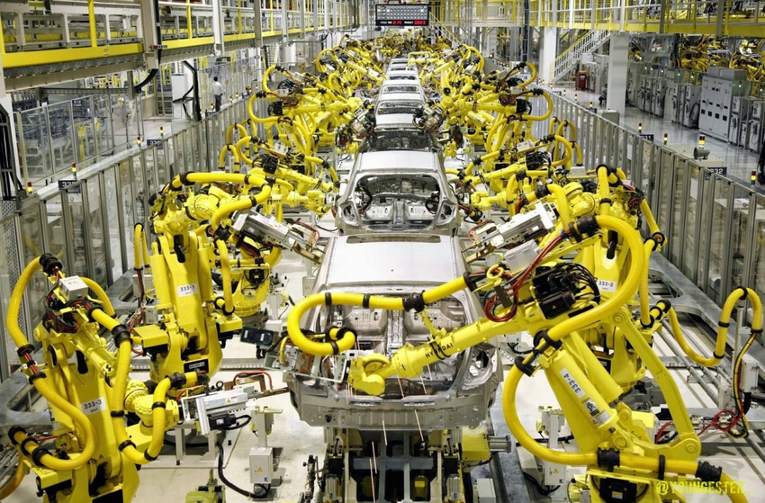

Industry
Industrial Robots are used for many reasons one of the most common is Because they can be programmed to perform dangerous, dirty and/or repetitive tasks with consistent precision and accuracy.The robot’s actions are directed by a combination of programming software and controls. Their automated functionality allows them to operate around the clock and on weekends—as well as with hazardous materials and in challenging environments freeing personnel to perform other tasks. Robotic technology also increases productivity and profitability while eliminating labor intensive activities that might cause physical strain or potential injury to workers.

The first industrial robots were created in 1954 by George Devol for the use of moving hot metal consitantly and safely as many injuries in this job had built up over time.
Visit Site on Industrial Robots